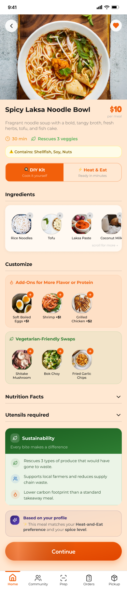

Students eat badly. Not because they don't care. Because nothing was designed for them.
Existing meal kit services assume:
- A predictable weekly schedule
- A full kitchen
- A budget that can absorb $60 without blinking
For a student juggling classes, a part-time job, and three group projects, that's not a service. That's another thing to manage.
But the problem wasn't just on the user side.
Meal kits are complex operations. If something breaks behind the scenes (sourcing, logistics, support), the user feels it.
So we asked a different question:
We didn't just ask students what they wanted. We asked the people serving them too.
Audited existing meal kit services before talking to anyone.
What they do well → Variety, customization, subscription convenience
Where they fall short → Packaging waste, subscription lock-ins, complex meal prep, limited flexibility


Qualtrics survey capturing meal kit usage patterns, affordability concerns, and service preferences at scale.

Explored real experiences with services like HelloFresh. Frustrations with customization, prep time, and packaging came up repeatedly.

1:1 conversation surfacing deeper pain points around pricing, subscription models, and portion sizes.

Three chefs and dining operations staff in one room, answering questions, building on each other's answers, and giving us an honest look at how large-scale meal services actually run.

Five pain points. All pointing to the same thing: students needed a service that worked around their life, not the other way around.
Designing for both sides of the service meant understanding both sides of the people.
I created 6 personas (3 customers, 3 service staff) so every design decision could be tested against real human needs, not assumptions.
Customer Personas

Goal: Flexibility. Order when she needs it, not on a rigid weekly plan.
Frustration: Forgets to skip deliveries and gets charged anyway

Goal: Affordable, single-serving, on-demand meals with minimal waste
Frustration: Meal kits aren't built for one person; minimum orders and complex recipes price her out

Goal: High-protein, customizable meals that actually match his macros
Frustration: Portion sizes are too small and ingredient swaps are nearly impossible
Service-Side Personas

Goal: On-time deliveries with minimal disruptions
Frustration: Weather, inconsistent drivers, and packaging leaks constantly derail her day

Goal: Create exciting, easy-to-cook meals customers actually love
Frustration: Supplier constraints make ingredient flexibility nearly impossible

Goal: Resolve issues fast and keep customers happy
Frustration: Rigid company policies make it hard to actually help people
With research in hand, we mapped the full customer journey, from the moment a student first hears about FreshBite to becoming a loyal user.
The journey followed Sarah Lopez, our budget-conscious persona, through five stages:
Key moments we identified
Students visited the app but second-guessed committing.
The kiosk pickup experience had to feel intuitive on the first try.
Users who felt connected to the rescued produce mission stayed longer.
These friction points directly informed the onboarding flow and scheduling design in the prototype.

Six flows. One goal: make healthy eating feel effortless for students.
Prototypes were built in Figma and polished to production quality using Figma Make.
First impressions matter more when students are already subscription-skeptical. The onboarding had one job: earn trust before asking for anything.
"Fresh, Flexible and Planet-Friendly." No jargon, no commitment pressure.
A quick scan of what makes FreshBite different. On-demand ordering, rescued produce, AI recommendations.
"You're helping rescue produce." Turns a product feature into a sense of personal contribution, before the user has even ordered once.
"Let's get to know YOU." Bridges brand values to individual needs, setting up AI-powered recommendations.
The homepage needed to feel warm but also immediately useful.

"Hello Sarah!" builds instant connection.
"You've saved 4 lbs of food waste so far" keeps the mission visible without being preachy.
DIY Meal Kits and Heat-and-Eat are visually separated, so users self-select based on how much time and effort they have that day.
This screen does three jobs at once: inform, customize, and reinforce brand values.

Full ingredient list with allergens, spice level, and portion size. All upfront.
Add-ons and vegetarian-friendly swaps for personalization.
Switch between DIY and Heat-and-Eat dynamically, for flexibility without starting over.
Rescued produce and eco-friendly packaging messaging at checkout: confidence, control, and values all in one place.
The most complex flow to design: it had to serve two very different user types without making either feel like they were in the wrong app.
This flow gives users more control without more friction, which was the core tension the research kept surfacing.
Order now, delivered to the nearest kiosk in 1 hour. Low friction, immediate.
Pick a date, time, and meal. Ideal for planners.
Dual input (meals per day × days per week) with day-wise meal selection. "Choose or Repeat" quick actions for users who find a meal they love.
Getting the meal is the moment of truth. This flow blends logistical clarity with emotional reward.
Shows current and past orders with day-wise visibility and an Opt-Out option. No traps.
Location-based kiosk directions → QR code scan → locker opens → confirmation.
"You just rescued 4 veggies" is positive reinforcement that closes the sustainability loop with a feel-good moment.
The experience doesn't end at pickup. Students still need to actually cook the thing.
With a video option for hands-free cooking support and an audio option.
"Share what you cooked" nudge at the end: a natural, unforced bridge to the community feed.
Transforms isolated cooking into a shared experience, turning a utility app into something students actually want to open.
Designs don't get better by looking at them. They get better by watching someone else use them.
I ran a task-based usability test with 5 students using a think-aloud protocol.
Test the clarity and efficiency of the meal scheduling flow.
CTAs in the scheduling flow were overwhelming; users didn't know where to look or what to do next.
Replaced the CTA-heavy layout with a breadcrumb-based navigation system, giving users a clear sense of where they were and what came next.
Changes were implemented immediately after testing, keeping the process agile and truly iterative, not just performatively so.
The research pointed to real problems. The design solved them. The testing proved it.
~40%
improvement in task success rate across usability testing sessions
What I Learned
Good service design starts way before the first screen.
Talking to chefs and logistics staff alongside students changed how I see design problems. The same failure looks completely different depending on which end of the service you're standing on.
I came in thinking this was an app project. I left understanding logistics, affiliate marketing, and cold chain compliance. Service design is bigger than the screen. I'm hooked.
I learned to stay accountable for outcomes even when ownership got uneven: stepping up, filling gaps, keeping focus. It made me a more adaptable collaborator.
One usability test changed the entire scheduling flow. That's the reminder I needed.